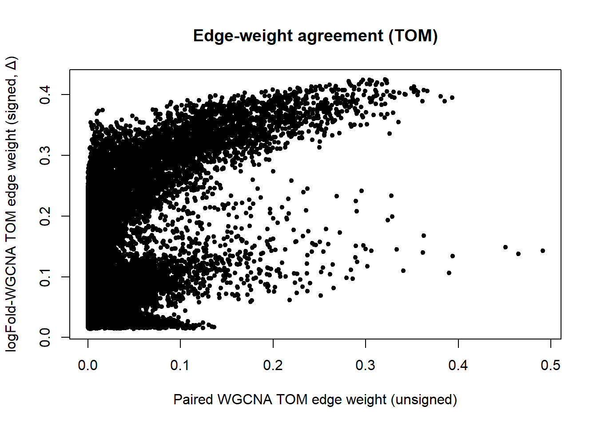

Welcome to Bioconductor
Vignettes contain introductory material; view with
'browseVignettes()'. To cite Bioconductor, see
'citation("Biobase")', and for packages 'citation("pkgname")'.
eset <- gse[[1]]expr <-exprs(eset)pheno <-pData(eset)annot <-fData(eset)rownames(pheno) <- pheno$geo_accessiondim(expr); head(pheno); head(annot)
[1] 858 80
title geo_accession status submission_date
GSM1099620 non-OSCC_01N GSM1099620 Public on Jan 07 2015 Mar 18 2013
GSM1099621 non-OSCC_02N GSM1099621 Public on Jan 07 2015 Mar 18 2013
GSM1099622 non-OSCC_03N GSM1099622 Public on Jan 07 2015 Mar 18 2013
GSM1099623 non-OSCC_04N GSM1099623 Public on Jan 07 2015 Mar 18 2013
GSM1099624 non-OSCC_05N GSM1099624 Public on Jan 07 2015 Mar 18 2013
GSM1099625 non-OSCC_06N GSM1099625 Public on Jan 07 2015 Mar 18 2013
last_update_date type channel_count source_name_ch1
GSM1099620 Jan 07 2015 RNA 1 adjacent non-tumor epithelia
GSM1099621 Jan 07 2015 RNA 1 adjacent non-tumor epithelia
GSM1099622 Jan 07 2015 RNA 1 adjacent non-tumor epithelia
GSM1099623 Jan 07 2015 RNA 1 adjacent non-tumor epithelia
GSM1099624 Jan 07 2015 RNA 1 adjacent non-tumor epithelia
GSM1099625 Jan 07 2015 RNA 1 adjacent non-tumor epithelia
organism_ch1 characteristics_ch1 characteristics_ch1.1
GSM1099620 Homo sapiens gender: male age: 46
GSM1099621 Homo sapiens gender: male age: 49
GSM1099622 Homo sapiens gender: male age: 56
GSM1099623 Homo sapiens gender: male age: 50
GSM1099624 Homo sapiens gender: male age: 36
GSM1099625 Homo sapiens gender: male age: 48
characteristics_ch1.2 characteristics_ch1.3 molecule_ch1
GSM1099620 Stage: II tissue: oral epithelia total RNA
GSM1099621 Stage: II tissue: oral epithelia total RNA
GSM1099622 Stage: III tissue: oral epithelia total RNA
GSM1099623 Stage: III tissue: oral epithelia total RNA
GSM1099624 Stage: II tissue: oral epithelia total RNA
GSM1099625 Stage: IVA tissue: oral epithelia total RNA
extract_protocol_ch1
GSM1099620 Total RNA was extracted from 40 pairs of OSCC patients using the miRNeasy Mini Kit (Qiagen, #217004) according to the manufacturer’s protocol.
GSM1099621 Total RNA was extracted from 40 pairs of OSCC patients using the miRNeasy Mini Kit (Qiagen, #217004) according to the manufacturer’s protocol.
GSM1099622 Total RNA was extracted from 40 pairs of OSCC patients using the miRNeasy Mini Kit (Qiagen, #217004) according to the manufacturer’s protocol.
GSM1099623 Total RNA was extracted from 40 pairs of OSCC patients using the miRNeasy Mini Kit (Qiagen, #217004) according to the manufacturer’s protocol.
GSM1099624 Total RNA was extracted from 40 pairs of OSCC patients using the miRNeasy Mini Kit (Qiagen, #217004) according to the manufacturer’s protocol.
GSM1099625 Total RNA was extracted from 40 pairs of OSCC patients using the miRNeasy Mini Kit (Qiagen, #217004) according to the manufacturer’s protocol.
label_ch1
GSM1099620 Cy3
GSM1099621 Cy3
GSM1099622 Cy3
GSM1099623 Cy3
GSM1099624 Cy3
GSM1099625 Cy3
label_protocol_ch1
GSM1099620 Cy3 labled cRNA (PCR product) were prepared with illumina GoldenGate assay
GSM1099621 Cy3 labled cRNA (PCR product) were prepared with illumina GoldenGate assay
GSM1099622 Cy3 labled cRNA (PCR product) were prepared with illumina GoldenGate assay
GSM1099623 Cy3 labled cRNA (PCR product) were prepared with illumina GoldenGate assay
GSM1099624 Cy3 labled cRNA (PCR product) were prepared with illumina GoldenGate assay
GSM1099625 Cy3 labled cRNA (PCR product) were prepared with illumina GoldenGate assay
taxid_ch1 hyb_protocol
GSM1099620 9606 Standard Illumina hybridization protocol
GSM1099621 9606 Standard Illumina hybridization protocol
GSM1099622 9606 Standard Illumina hybridization protocol
GSM1099623 9606 Standard Illumina hybridization protocol
GSM1099624 9606 Standard Illumina hybridization protocol
GSM1099625 9606 Standard Illumina hybridization protocol
scan_protocol description
GSM1099620 Standard Illumina scanning protocol replicate 1
GSM1099621 Standard Illumina scanning protocol replicate 1
GSM1099622 Standard Illumina scanning protocol replicate 1
GSM1099623 Standard Illumina scanning protocol replicate 1
GSM1099624 Standard Illumina scanning protocol replicate 1
GSM1099625 Standard Illumina scanning protocol replicate 1
data_processing
GSM1099620 The data were normalised using quantile normalisation with IlluminaGUI in R
GSM1099621 The data were normalised using quantile normalisation with IlluminaGUI in R
GSM1099622 The data were normalised using quantile normalisation with IlluminaGUI in R
GSM1099623 The data were normalised using quantile normalisation with IlluminaGUI in R
GSM1099624 The data were normalised using quantile normalisation with IlluminaGUI in R
GSM1099625 The data were normalised using quantile normalisation with IlluminaGUI in R
platform_id contact_name contact_email
GSM1099620 GPL8179 Shine-Gwo,,Shiah davidssg@nhri.org.tw
GSM1099621 GPL8179 Shine-Gwo,,Shiah davidssg@nhri.org.tw
GSM1099622 GPL8179 Shine-Gwo,,Shiah davidssg@nhri.org.tw
GSM1099623 GPL8179 Shine-Gwo,,Shiah davidssg@nhri.org.tw
GSM1099624 GPL8179 Shine-Gwo,,Shiah davidssg@nhri.org.tw
GSM1099625 GPL8179 Shine-Gwo,,Shiah davidssg@nhri.org.tw
contact_department
GSM1099620 National Institute of Cancer Research
GSM1099621 National Institute of Cancer Research
GSM1099622 National Institute of Cancer Research
GSM1099623 National Institute of Cancer Research
GSM1099624 National Institute of Cancer Research
GSM1099625 National Institute of Cancer Research
contact_institute contact_address contact_city
GSM1099620 National Health Research Institutes No. 35, Keyan Rd. Zhunan
GSM1099621 National Health Research Institutes No. 35, Keyan Rd. Zhunan
GSM1099622 National Health Research Institutes No. 35, Keyan Rd. Zhunan
GSM1099623 National Health Research Institutes No. 35, Keyan Rd. Zhunan
GSM1099624 National Health Research Institutes No. 35, Keyan Rd. Zhunan
GSM1099625 National Health Research Institutes No. 35, Keyan Rd. Zhunan
contact_state contact_zip/postal_code contact_country
GSM1099620 Miaoli County 350 Taiwan
GSM1099621 Miaoli County 350 Taiwan
GSM1099622 Miaoli County 350 Taiwan
GSM1099623 Miaoli County 350 Taiwan
GSM1099624 Miaoli County 350 Taiwan
GSM1099625 Miaoli County 350 Taiwan
supplementary_file data_row_count age:ch1 gender:ch1 Stage:ch1
GSM1099620 NONE 858 46 male II
GSM1099621 NONE 858 49 male II
GSM1099622 NONE 858 56 male III
GSM1099623 NONE 858 50 male III
GSM1099624 NONE 858 36 male II
GSM1099625 NONE 858 48 male IVA
tissue:ch1
GSM1099620 oral epithelia
GSM1099621 oral epithelia
GSM1099622 oral epithelia
GSM1099623 oral epithelia
GSM1099624 oral epithelia
GSM1099625 oral epithelia
dissTOM <-1- TOMgeneTree <-hclust(as.dist(dissTOM), method ="average")plot(geneTree,main ="Clustering of miRNAs based on TOM",xlab ="", sub ="", cex =0.4)
mergeCloseModules: Merging modules whose distance is less than 0.25
multiSetMEs: Calculating module MEs.
Working on set 1 ...
moduleEigengenes: Calculating 2 module eigengenes in given set.
Calculating new MEs...
multiSetMEs: Calculating module MEs.
Working on set 1 ...
moduleEigengenes: Calculating 2 module eigengenes in given set.
plotDendroAndColors( geneTree,cbind(moduleColors0, moduleColors),c("Dynamic Tree Cut", "Merged modules"),dendroLabels =FALSE,hang =0.03,addGuide =TRUE,guideHang =0.05,main ="Modules before and after merging")
Spearman's rank correlation rho
data: v1 and v2
S = 5.8386e+15, p-value < 2.2e-16
alternative hypothesis: true rho is not equal to 0
sample estimates:
rho
0.1397012
plot(v1, v2, pch =20,xlab ="Paired WGCNA TOM edge weight (unsigned)",ylab ="logFold-WGCNA TOM edge weight (signed, Δ)",main ="Edge-weight agreement (TOM)")

cat("\nInterpretation note: Li uses an *unsigned* network (|cor|),","while your logFold run uses *signed* adjacency/TOM.","So perfect agreement is not expected, even if biology overlaps.\n\n")
Interpretation note: Li uses an *unsigned* network (|cor|), while your logFold run uses *signed* adjacency/TOM. So perfect agreement is not expected, even if biology overlaps.
Spearman's rank correlation rho
data: k_wgcna and k_logFold
S = 53287906, p-value < 2.2e-16
alternative hypothesis: true rho is not equal to 0
sample estimates:
rho
0.4408269